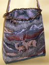
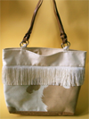
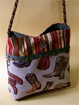
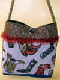

Really Rosie Designs. Our purses & bags are eye-catching and attention-getting "fabric art." They are practical, too: comfortable to carry or hold and always include a cell phone pocket.
… and our handbags are exclusive. Most bags are unique—an overused word, yes, but true for Really Rosie Designs.
Really Rosie handbags are handcrafted—a feast for the eyes and to the touch. Our bags are a combination of captivating colors, patterns, and textures with both vintage and contemporary trims, colorful ribbons, gorgeous beads, and embellishments from around the world. We love pizzazz, whimsey, and humor (such as a zebra-lined leopard bag).
Come see us at:
I'm Kathy. Really Rosie Designs is a family sewing enterprise based in Syracuse, New York.
My sister Janene and I have been sewing since we were girls and are veterans of the Lake County Junior Fair. This early training in the exacting 4-H method and rigorous judging has led to our meticulous craftsmanship.
We are always looking for new outlets for our hand-made handbags. It is our pleasure to bring our fabric art to other women who appreciate fine materials and whimsey in their personal accessories.
Do you want to know more about Really Rosie Designs? Would your store like to stock some of our bags?
Send me an email. I'd love to hear from you. . . . and email me, too, if you just want to know more about our handbags. Thanks!
|  | Exquisite wildlife tapestry is the focal point of this series of bags, all with leather straps. |
|  | Did you ever get the pony you wanted when you were little? This is the "Palomino Pony" bag...cream suede top band, long silky mane of fringe, and heavy cotton palomino print, with handles that look like reins. Giddyup!! |
|  | Getcher boots on! Fun tapestry of boots, this one complemented by a bold stripe top and dunky brass details on the trim. |
|  | More boots … gold cording and red fringe complete this look. |